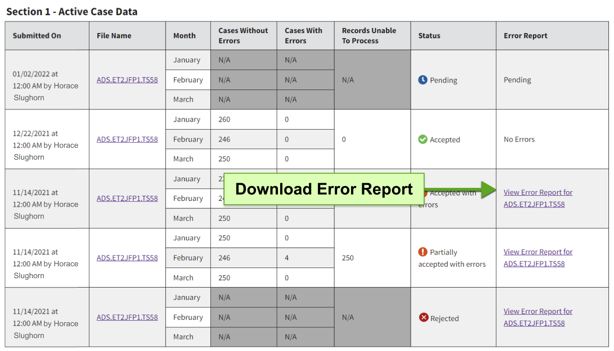

Understanding Error Reports and File Structure
Error reports are generated for each file you submit when the TDP system detects potential data quality issues in your file. These can range from issues with the file layout (which can prevent TDP from being able to fully process your files) to issues related to specific records and/or cases in your file.
This guide provides instruction on how to access, understand, and address issues listed in your error reports. Also Included herein is a brief overview of how data is organized in your files.
Please note: The error reports were designed to help you to correct a wide variety of data issues. Most of the errors that may be listed in these reports are based on the file record layouts and coding instructions, which are publicly available and accessible from the TDP home page. These reports do not capture every possible data quality issue. The OFA TANF data team may still reach out to you via email with additional feedback.
Jump to:
- Download and View Error Reports
- Data File Structure
- Overview of the Error Report
- New Coding Instruction Guidance for States and Territories
Download and View Error Reports
Error reports can be accessed from the Data Files page by navigating to the Submission History tab for a given fiscal year and quarter. Read more about accessing Submission History.
To access error reports for submitted files, select the link in the ‘Error Report’ column to download error feedback associated with the relevant version of the file.
{kind=link}
Data File Structure
The files that you submit on a quarterly basis for your TANF or SSP program contain large amounts of data in a specific format that enables TDP to process and provide feedback when uploaded and submitted. Please note that these files are designed for system processing and, as such, are not as human-readable. For example, below is an illustration of a short TANF, Section 1 (Active Case Data) file:
{kind=link}
Included below are descriptions of how the data files are classified (or recognized) by the system. These classifications determine the data components to be included in each file and how the components are organized.
Classifications of Data Files
Program Type
Files are first identified by their program type: Tribal TANF, TANF (ACF-199), or Separate State Program Maintenance-of-Effort (ACF-209). Each type of data file has its own unique elements, which are documented in the coding instructions linked below.
Sections of Data
TANF and SSP-MOE data covering each fiscal quarter period are reported in up to four sections of data files:
| Section Name | Description |
|---|---|
| Active Case Data | Families currently receiving TANF or SSP-MOE benefits |
| Closed Case Data | Families who are no longer receiving TANF or SSP-MOE benefits. |
| Aggregate Data | Aggregate counts quantifying the total number of families, recipients, and amount of assistance |
| Stratum Data | Aggregate counts quantifying the total number of families by section and stratum Note: this section of the data report is only required for some jurisdictions. Read our FAQ for more detail on Stratum data submission requirements |
Components of Data
Records
Each data file contains between 3 and 5 different types of records (including the header and trailer).
While header and trailer records are included in every data file, the other record types included in each file vary by section. These record types (described below) are referenced in the error message associated with each data quality issue included in the error report. Please note that T1, T2,...,T7 record types are relevant to TANF and Tribal TANF data files, whereas M1,M2,...,M7 record types refer to the SSP-MOE data files.
| Record Type | Description | Associated Section |
|---|---|---|
| T1, M1 | Family-level data for a specific month the family is receiving assistance. | Section 1 (Active Case Data) |
| T2, M2 | Person-level data for adults and minor heads-of-household for a specific month that the family is receiving assistance. | Section 1 (Active Case Data) |
| T3, M3 | Person-level data for minor non- heads-of-household for a specific month that the family is receiving assistance. | Section 1 (Active Case Data) |
| T4, M4 | Family-level data for the last month the family received assistance. | Section 2 (Closed Case Data) |
| T5, M5 | Person-level data for the last month that the family received assistance. | Section 2 (Closed Case Data) |
| T6, M6 | Aggregate data of families applying for and receiving assistance, by month. | Section 3 (Aggregate Data) |
| T7, M7 | Aggregate data of families receiving assistance, by month and stratum. | Section 4 (Stratum Data) |
Header and Trailer Records
The Header and Trailer refer to special records at the beginning and end of every data file. The Header communicates key information to TDP about the file's classification that helps the system correctly process it, including calendar year and quarter, program type, and section. The Trailer contains information about the number of records (excluding the header and trailer records) in the file.
Examples of Header and Trailer records:
HEADER20204G02000TAN2 D
TRAILER0000042
Typically, these records will be generated automatically as part of your current process for exporting data files. Please note: TDP does require that the update indicator, one of the items making up the Header record, be set to a value of "D" (meaning "Delete"). The update indicator is an instruction to the system to delete and replace any existing data in the TDP database for the specified quarter, program type, and section with the data included in the submitted file). Read more about how to submit complete data.
Items
Items (sometimes referred to as "data elements") are the building blocks of every record. Items are references to the coding instructions. For example, Item 11 of Section 1 of the TANF Data Report is "Number of Family Members". Each data quality issue in the error report will, if applicable, include the associated Item Number and Item Name for reference to the coding instructions, which include all acceptable values for each item, their meanings, and guidelines for their use.
Some items have a static list of acceptable values, such as the Item 10 (Newly-Approved Applicant), where the acceptable values are either "1" (Yes, a newly-approved applicant) or "2" (No). Others, like Item 32 (Date of Birth), have a broader range of specific formats for which to report values (e.g. YYYYMMDD).
Overview of the Error Report
TDP's error reports are designed to provide you with key information you may need to quickly identify records that have been flagged for data quality issues.
The error report has two tabs:
- Critical: Provides detailed information on the most important errors related to data elements that allow us to identify families receiving assistance and work eligible individuals.
- Summary: Groups all errors by type, month, and year with a count of how frequently that error occurs.
Critical Tab:
- Case Number, Year, and Month — which can be used to identify which cases have errors and the reporting period those errors are specific to (if applicable).
- Error Message — which describes the error and how the related items are logically connected.
- Item Number and Item Name — which can be used alongside the error message to cross-reference with the coding instructions.
- Internal Variable Name — a value specific to TDP's database for use in support sessions with the TANF data team.
- Row Number — identifying which row of the submitted file contains the record associated with a given error.
- Error Type — indicates the category of error and is related to both the cause of the error, and its effect on whether records are accepted into the database.
{kind=link}
Summary Tab:
- Case Number, Year, and Month — which can be used to identify which cases have errors and the reporting period those errors are specific to (if applicable).
- Item Number and Item Name
- Internal Variable Name
- Error Type
- Number Of Occurrences: Total number of times the error appears; this number will include all errors in the file, even when there are more than 500 critical errors.
{kind=link}
Interpreting Error Types
There are four error types which affect data submission differently. Unlike low priority errors, high priority errors will prevent some/all records in the file from being accepted into the TDP system's database. You may filter the report to display high-priority errors first. Low priority errors will not affect whether a record makes it into the data base, but we encourage you to refer to the coding instructions to make corrections for the most accurate data. Learn how to filter data here.
For users familiar with the legacy system, errors are equivalent to edits. File Pre-Check and Case Consistency errors are similar to fatal edits and Record Value Invalid and Record Value Inconsistency are similar to warnings.
| Error Type | Description | Priority | Impact | File Status |
|---|---|---|---|---|
| File Pre-Check | Relate to the format of the records within a file (e.g. incorrect headers, incorrect record length). | High | Some or all of the record(s) in the file are rejected | Rejected or Partially Accepted with errors |
| Case Consistency | Relates to inconsistency across records (e.g. inconsistency across related person- and family-level records). These errors are triggered by a series of checks that confirm that all the records for a family in a given month are related in a meaningful way. | High | Record(s) rejected | Partially accepted with errors |
| Record Value Invalid | These errors involve unexpected values in the record (e.g. missing values or out-of-range values). | Low | Record(s) accepted | Accepted with errors |
| Record Value Inconsistency | These errors stem from inconsistencies in the record (e.g. conflicting data between items in the same record). | Low | Record(s) accepted | Accepted with errors |
Examples of Common Errors
Below are examples of error messages associated with common issues that may be listed in an error report.
File Pre-Check: Errors related to header or trailer records:
Header-related errors are often the result of submitting files for a fiscal period that is not consistent with the time period in the header record (e.g. trying to submit 2022 data for a 2024 submission). Other header or trailer errors may be related to how the file was generated (e.g. the file produced is missing a header or trailer record). Some examples of how these types of error may appear in your error report are included below:
Submitted reporting year: 2024, quarter: 1 doesn't match file reporting year 2022, quarter: 4.
Your file does not begin with a HEADER record.
Please refer to the Transmission File Header Record definitions to compare your file's header or trailer to the expected layout.
File Pre-Check: Errors related to record length:
Record length-related errors will be raised if the specified record is not aligned with the record layout requirements. For example, this kind of error may appear as follows in the report:
T6 record length is 409 characters but must be 379.
Please refer to the Transmission File Layout documents to compare your records against their expected layouts.
| Record Type | Min Length | Max Length | Notes |
|---|---|---|---|
| T1 | 117 | 156 | |
| T2 | 156 | 156 | |
| T3 | 60 | 156 | T3 records with one child must have a record length ≥ 60. T3 records with two children are must have 101 ≤ record length ≤ 156. If any value is in the 2nd child positions (61 to 101), the 2nd child record will be processed, unless it is completely zero-filled or space-filled. |
| T4 | 36 | 71 | |
| T5 | 71 | 71 | |
| T6 | 379 | 379 | |
| T7 | 247 | 247 | Please space-fill to max length after last stratum reported. |
| Record Type | Min Length | Max Length | Notes |
|---|---|---|---|
| T1 | 117 | 122 | |
| T2 | 122 | 122 | |
| T3 | 60 | 122 | T3 records with one child must have a record length ≥ 60. T3 records with two children are must have 101 ≤ record length ≤ 122 If any value is in the 2nd child positions (61 to 101), the 2nd child record will be processed, unless it is completely zero-filled or space-filled. |
| T4 | 36 | 71 | |
| T5 | 71 | 71 | |
| T6 | 379 | 379 |
| Record Type | Min Length | Max Length | Notes |
|---|---|---|---|
| M1 | 113 | 150 | |
| M2 | 150 | 150 | |
| M3 | 60 | 150 | M3 records with one child must have a record length ≥ 60. M3 records with two children are must have 101 ≤ record length ≤ 150. If any value is in the 2nd child positions (61 to 101), the 2nd child record will be processed, unless it is completely zero-filled or space-filled. |
| M4 | 36 | 66 | |
| M5 | 66 | 66 | |
| M6 | 259 | 259 | |
| M7 | 247 | 247 |
Case Consistency: Errors related partial or exact duplicate records:
Errors related to duplicate records occur when a file contains either exact or partial duplicates of non-header/non-trailer records. These errors compromise the integrity of the data and must be resolved before the file can be accepted.
An exact duplicate record occurs when multiple non-header/non-trailer records in a file are exactly the same in all fields.
"Duplicate record detected with record type T1 at line 3. Record is a duplicate of the record at line number 2."
A partial duplicate record occurs when multiple non-header/non-trailer records share the same values for some key data elements while differing in others.
"Partial duplicate record detected with record type T1 at line 3. Record is a partial duplicate of the record at line number 2. Duplicated fields causing error: Item 0 (Record Type), Item 4 (Reporting Year and Month), and Item 6 (Case Number)."
Both exact and partial duplicates will result in the rejection of the affected record or file to maintain data accuracy and consistency. The specific fields checked for duplicates vary by section and record type. Consult the coding instructions to understand the required fields.
Known Issues
There are a few known issues that we are working to resolve:
- When you open TDP, you will see a banner at the top of the page with a drop down for more information. The "Here's how you know" button that should open and close the banner requires an extra click to activate.
- On the Data Files you may be able to inadvertently hide file inputs. If you encounter this issue, refresh the page and try again.
We appreciate your patience while we work to address these issues.
Record Value Invalid: Errors related to invalid values for a specific item/data element:
Invalid value errors can come up when a specific item/data element has an unexpected value (e.g. a letter or a symbol was reported for the zip code field, such as: "462$1"):
Item 17 (ZIP code) must be numeric.
To remedy these type of issues, you can compare the value reported in the file for a given item number to the allowable values in the coding instructions associated to the relevant item number. The coding instructions are linked below:
Record Value Inconsistency: Errors related to inconsistent values for related items/data elements in the same record:
Some errors may require review of the coding instructions for multiple items (and their respective values) to determine the proper correction. In the example below, the error is communicating that the value reported for Item 49 is in a conflict with the value for Item 30 in the same record. This message suggests a problem with either the value of Item 49 or the value of Item 30. Refer to the coding instructions and your own data to determine which value needs to be corrected.
If Item 30 (Family Affiliation) is 1 then Item 49 (Work Participation Status) must be in set of values [01, 02, 05, 07, 09, 15, 17, 18, 19, 99].
Some Record Value Inconsistency errors are more serious than others. When they prevent us from identifying families receiving assistance and work-eligible individuals, these errors will appear in the critical tab of the error report. The error message below suggests that we do not have a valid social security number for an adult or child who is receiving assistance.
Since Item 30 (Family Affiliation) is 1, then Item 33 (Social Security Number) 000000000 is in ['000000000', '111111111', '222222222', '333333333', '444444444', '555555555', '666666666', '777777777', '888888888', '999999999'].
Since Item 67 (Family Affiliation) is 1, then Item 69 (Social Security Number) 000000000 is in ['000000000', '111111111', '222222222', '333333333', '444444444', '555555555', '666666666', '777777777', '888888888', '999999999'].
New Coding Instructions Guidance for States and Territories
Some errors flagged in error reports may be associated with values and/or fields that have been deprecated by the updated coding instructions for states and territories. You can refer to the public guidance for a timeline to correct these.
If you submit files based on the old instructions, this will not negatively impact your submission, work participation rates, or published data. You will, however, begin to see errors in the TDP error reports that reflect the new instructions, but these errors will not impact whether your data is accepted.
Please contact the data team at tanfdata@acf.hhs.gov with any questions.